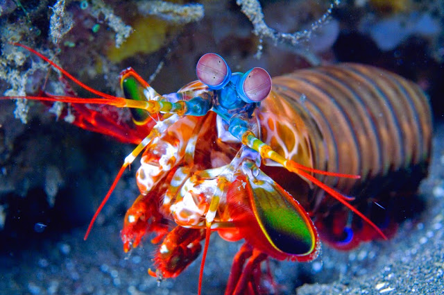

Fatos sobre o Stomatopoda.
O que é o Stromatopoda?
Stomatopoda (Odontodactylus scyllarus), chamados popularmente de tamarutacas ou de lacraias-do-mar no Brasil, é uma ordem de crustáceos marinhos da subclasse Hoplocarida, que agrupa cerca de 400 espécies, caracterizadas principalmente pela morfologia da segunda pata torácica, que é modificada em apêndice subquelado, lembrando uma pata de louva-a-deus.[2]
- Reino: Animalia
- Filo: Arthropoda
- Subfilo: Crustacea
- Classe: Malacostraca
- Subclasse: Hoplocarida
- Ordem: Stomatopoda
A visão do Stromatopoda
Esses animais possuem o mais complexo sistema de visão de cores do mundo animal,
pois enxergam 12 cores primárias, correspondentes aos 12 pigmentos distintos presentes em sua
retina.
Nossos olhos possuem três tipos desses receptores - que correspondem à luz azul, verde e
vermelha -, que nos permitem perceber o espectro de cores que vemos. Os cães contam com apenas
dois tipos de cones (verde e azul), e é por isso que eles vêm tons de azul, verde e um pouco de
amarelo. Muitos anfíbios, répteis, aves e insetos possuem quatro tipo de cones, o que significa
que espécies dessas classes conseguem ver cores que o nosso cérebro é incapaz de processar. Algumas
espécies específicas de borboletas e possivelmente pombos possuem cinco cones de percepção de cor,
o que aumenta ainda mais a quantidade de pigmentos que eles são capazes de perceber. O sistema de visão
dos estomatópodes possui doze cones sensíveis à luz e outros quatro que filtram a luz
(16 cones no total), o que lhes permite ver cores polarizadas e imagens multiespectrais.[6]
Como cada cone pode ver cerca de 100 cores, os estomatópodes são capazes de ver 1024 cores,
ou seja, 1 septilhão de cores. Em comparação, o olho humano vê 106 cores, ou seja, 1 milhão
de cores apenas. A visão dos estomatópodes é sensível à luz ultravioleta, mas ainda é desconhecido
se ela pode distinguir a luz infravermelha.